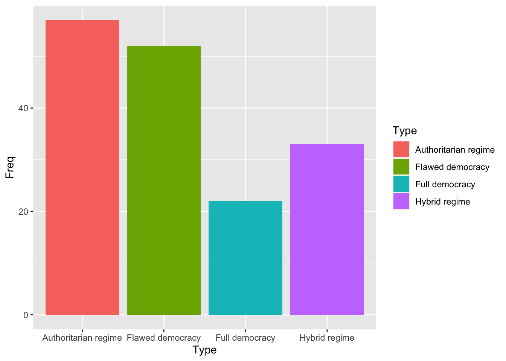
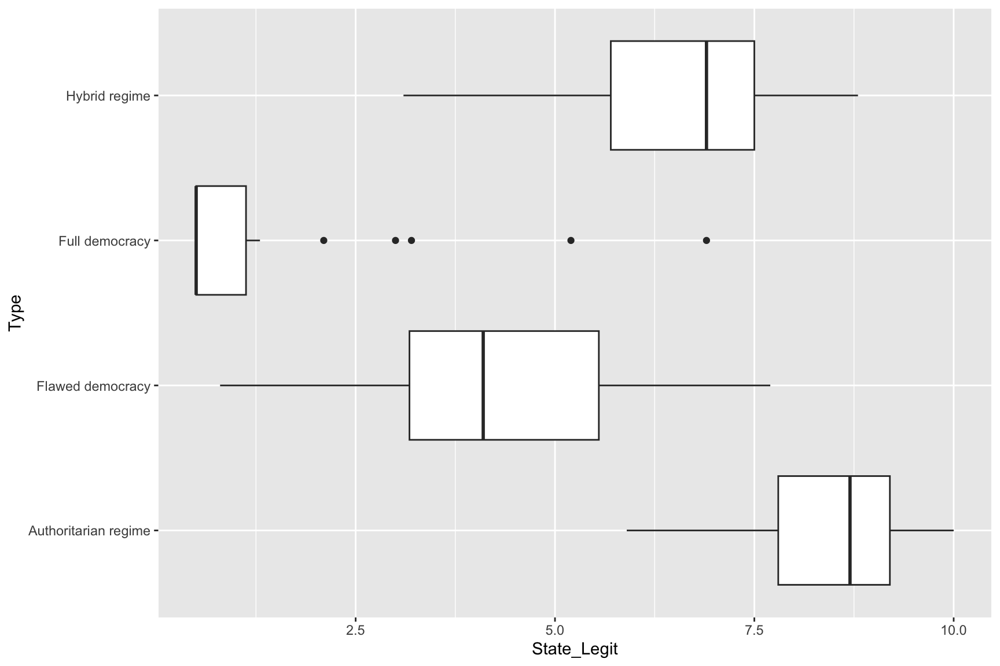
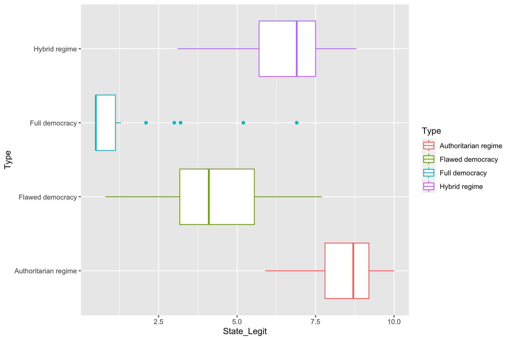
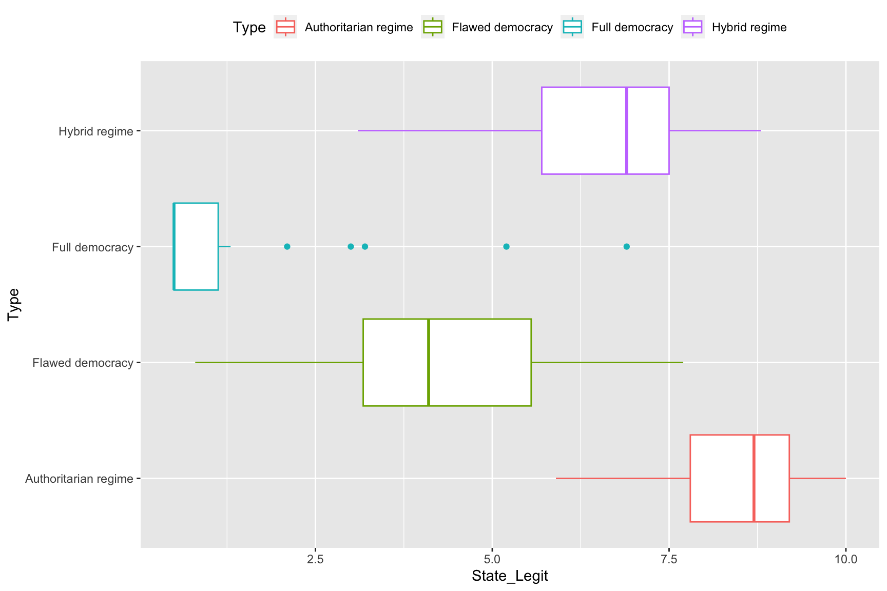
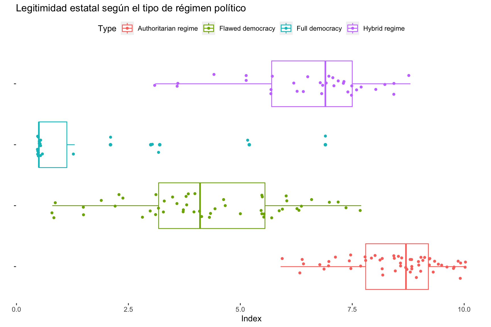

Práctica dirigida 2

FACULTAD DE CIENCIAS SOCIALES - PUCP
Curso: POL 278 - Estadística para el análisis político 1 | Semestre
2023 - 1
1.¿Qué es el análisis descriptivo?

2.Nivel de medida de una variable

Medición por tipo de variables:

3.Importancia de visualización de datos
Hay una infinidad de gráficos a los que se puede recurrir dependiendo del interés de la investigadora o el investigador. Aquí hay algunos ejemplos útiles: https://www.data-to-viz.com/
¿Por qué es importante la visualización de datos? Graficar data ayuda a contar historias y, sobre todo, dar un sentido a los cientos, miles, o incluso millones, de filas de datos que con las que podríamos eventualmente trabajar, facilitando la comprensión de la información.
En tanto la finalidad de la visualización de datos es ayudar a una mejor comprensión de la información, hay que tener cuidado con algunos gráficos como, por ejemplo, el gráfico de sectores o pie chart. A pesar de que la variable que estamos analizando permita utilizar este gráfico, hay buenas razones para no usarlo, y por qué es muchas veces mejor un gráfico de barras: https://www.data-to-viz.com/caveat/pie.html

Gráficos por tipo de variables:

4.Análisis descriptivo
Carguemos la data state_democracy_final.xlsx.
Hoy trabajaremos con el Índice de Estados Frágiles 2021 (Fragile State Index) la cual es una herramienta analítica desarrollada por The Fund for Peace y publicada anualmente en colaboración con Foreign Policy Magazine. El índice mide la fragilidad de los Estados y su capacidad para proporcionar servicios básicos a sus ciudadanos, mantener el control del territorio y la seguridad interna, así como su capacidad para interactuar efectivamente con otros Estados y actores internacionales. La fragilidad del Estado se mide a través de varios indicadores, incluyendo conflictos étnicos y religiosos, violencia, desplazamiento de población, desigualdad, pobreza, corrupción y falta de Estado de derecho. El índice es utilizado por gobiernos, organizaciones internacionales y expertos para comprender mejor la dinámica de los Estados frágiles y desarrollar políticas y estrategias para abordar sus desafíos.

Adicionalmente a la información recogida del Índice de Estados Frágiles, se le ha añadido los resultados del Democracy index. El índice de democracia (Democracy Index) es una herramienta analítica desarrollada por The Economist Intelligence Unit (EIU) que mide el nivel de democracia en 167 países del mundo. El índice se basa en cinco categorías principales: proceso electoral y pluralismo, funcionamiento del gobierno, participación política, cultura política y derechos civiles. Cada categoría se desglosa en subcategorías y se otorga una puntuación a cada país en función de su desempeño en cada una de ellas. La puntuación final de un país se clasifica en una de las cuatro categorías generales: democracia plena, democracia imperfecta, régimen híbrido o régimen autoritario. El índice se utiliza para evaluar y comparar el nivel de democracia en diferentes países y se actualiza anualmente para reflejar los cambios políticos y sociales.
library(rio) #Convocamos el paquete
data=import("state_democracy_final.xlsx")
str(data)## 'data.frame': 164 obs. of 18 variables:
## $ Country : chr "AFGHANISTAN" "ALBANIA" "ALGERIA" "ANGOLA" ...
## $ Year : num 2021 2021 2021 2021 2021 ...
## $ Rank : chr "9th" "119th" "74th" "34th" ...
## $ Total : num 102.1 59 73.6 89 50.1 ...
## $ C1: Security Apparatus : num 10 4.8 6 7.2 4.9 5.7 2.7 1.6 6.4 5.9 ...
## $ C2: Factionalized Elites : num 8.6 6.2 7.5 7.2 2.8 7 1.7 3.2 7.9 7.6 ...
## $ C3: Group Grievance : num 7.2 4.1 7.2 8.1 3.8 5.3 3.1 3.9 6.1 9.6 ...
## $ E1: Economy : num 9.2 6.4 6.8 8.4 7.1 6.6 1.6 1.8 4.7 4.1 ...
## $ E2: Economic Inequality : num 8.1 2.9 5.6 8.9 4.9 3.6 1.8 2.3 5.1 5.3 ...
## $ E3: Human Flight and Brain Drain: num 7 8.3 5.5 6 3 6.8 0.5 1.6 4.3 3 ...
## $ P1: State Legitimacy : num 8.7 5.5 7.8 8.2 4 6.9 0.5 0.6 9.1 8 ...
## $ P2: Public Services : num 9.8 4.4 5.6 9.3 4.8 3.9 2.8 2.3 5.5 3.5 ...
## $ P3: Human Rights : num 7.4 3.6 6.3 6.2 3.3 6 1.7 0.5 7.7 8.6 ...
## $ S1: Demographic Pressures : num 9 4.1 4.8 9 5.3 4.4 2.9 3.4 4.2 4.1 ...
## $ S2: Refugees and IDPs : num 8.8 2.6 6.8 5.9 1.9 6.6 2 4.4 6.9 1.7 ...
## $ X1: External Intervention : num 8.3 6.1 3.7 4.6 4.3 7 0.5 0.5 7.2 5.3 ...
## $ Democracy_Score : num 2.85 6.08 3.77 3.66 6.95 5.35 8.96 8.16 2.68 2.49 ...
## $ Type : chr "Authoritarian regime" "Flawed democracy" "Authoritarian regime" "Authoritarian regime" ...Análisis de variables nominales
library(dplyr)##
## Attaching package: 'dplyr'## The following objects are masked from 'package:stats':
##
## filter, lag## The following objects are masked from 'package:base':
##
## intersect, setdiff, setequal, unionlibrary(tidyverse)## ── Attaching packages
## ───────────────────────────────────────
## tidyverse 1.3.2 ──## ✔ ggplot2 3.4.1 ✔ purrr 0.3.5
## ✔ tibble 3.1.8 ✔ stringr 1.4.1
## ✔ tidyr 1.2.1 ✔ forcats 0.5.2
## ✔ readr 2.1.3
## ── Conflicts ────────────────────────────────────────── tidyverse_conflicts() ──
## ✖ dplyr::filter() masks stats::filter()
## ✖ dplyr::lag() masks stats::lag()#comprobamos el tipo de dato que analizaremos
class(data$Type)## [1] "character"¿Cómo está medida la variable? Demósle el formato debido:
data$Type = factor(data$Type)
str(data$Type)## Factor w/ 4 levels "Authoritarian regime",..: 1 2 1 1 2 4 3 3 1 1 ...Revisamos la frecuencia
data %>%
group_by(Type) %>%
summarize(Freq=n())## # A tibble: 4 × 2
## Type Freq
## <fct> <int>
## 1 Authoritarian regime 57
## 2 Flawed democracy 52
## 3 Full democracy 22
## 4 Hybrid regime 33Ordenado descendente con porcentaje
data %>%
group_by(Type) %>%
summarize(Freq=n()) %>%
mutate(Porcentaje = (Freq / sum(Freq))*100)#desc(Freq)## # A tibble: 4 × 3
## Type Freq Porcentaje
## <fct> <int> <dbl>
## 1 Authoritarian regime 57 34.8
## 2 Flawed democracy 52 31.7
## 3 Full democracy 22 13.4
## 4 Hybrid regime 33 20.1Ordenado descendente. ¿Cuales son las primeras conclusiones?
tablaFreq=data %>%
group_by(Type) %>%
summarize(Freq=n()) %>%
mutate(Porcentaje = (Freq / sum(Freq))*100) %>%
arrange(.,desc(Freq))
tablaFreq## # A tibble: 4 × 3
## Type Freq Porcentaje
## <fct> <int> <dbl>
## 1 Authoritarian regime 57 34.8
## 2 Flawed democracy 52 31.7
## 3 Hybrid regime 33 20.1
## 4 Full democracy 22 13.4Grafiquemos los resultados con ggplot2
#preparación de los datos a usar en el gráfico
graf1=tablaFreq %>% select(Type,Freq)
graf1=as.data.frame(graf1)
graf1## Type Freq
## 1 Authoritarian regime 57
## 2 Flawed democracy 52
## 3 Hybrid regime 33
## 4 Full democracy 22library(ggplot2)
library(taylor) #opcional (una ventaja de que R sea software libre)
ggplot(graf1, aes(x=Type, y=Freq, fill=Type)) +
geom_bar(stat = "identity") 
ggplot(graf1, aes(x=reorder(Type,Freq), y=Freq, fill=Type)) +
geom_bar(stat = "identity") +
ggtitle("Frecuencia de paises por régimen") +
xlab("Régimen") + ylab("Frecuencia")+
geom_text(aes(label=Freq), vjust=0.5, color="black", size=5)+
theme(panel.background=element_rect(fill = "white", colour = "white")) +
scale_fill_brewer(palette="Dark2")
#scale_fill_taylor_d(album="Lover") #"Fearless (Taylor's Version)"2. Análisis de variables numéricas
Ahora, veamos algunas medidas de tendencia central, distribución y dispersión para el caso de variables numéricas. Trabajemos con la variable state legitimacy, indicador que evalúa la representatividad y apertura del gobierno, y la manera como interactúa con la ciudadanía. Se toman en cuenta los niveles de confianza en las instituciones, demostraciones de desobediencia civil e insurgencias armadas.
Más información del indicador por acá: https://fragilestatesindex.org/indicators/p1/
Primero cambiemos los nombres de las variables. R funciona mejor así
names(data) #Para ver los nombres## [1] "Country" "Year"
## [3] "Rank" "Total"
## [5] "C1: Security Apparatus" "C2: Factionalized Elites"
## [7] "C3: Group Grievance" "E1: Economy"
## [9] "E2: Economic Inequality" "E3: Human Flight and Brain Drain"
## [11] "P1: State Legitimacy" "P2: Public Services"
## [13] "P3: Human Rights" "S1: Demographic Pressures"
## [15] "S2: Refugees and IDPs" "X1: External Intervention"
## [17] "Democracy_Score" "Type"colnames(data) = c("Country","Year","Rank","Score_Frag_States","Security","Elites","G_Grivance","Economy","Inequality","B_Drain","State_Legit","P_Services","Hum_Rights","Demo_Press","Refugees","Interven","Democracy_Score","Type")class(data$State_Legit)## [1] "numeric"Exploremos la variable. Veamos medidas de tendencia central y de dispersión. Ojo con cómo está medido: 10 es un Estado que posee un alto grado de ilegitimidad (o presión). 0 un Estado con poca presión o alta legitimidad desde la ciudadanía.
summary(data$State_Legit) #Ojo con los casos perdidos:## Min. 1st Qu. Median Mean 3rd Qu. Max.
## 0.500 3.675 6.400 5.805 8.200 10.000sd(data$State_Legit) ## [1] 2.851246mean(data$State_Legit) #veamos la varianza## [1] 5.805488rango=max(data$State_Legit)-min(data$State_Legit)
rango## [1] 9.5Analicemos por tipo de régimen. 10 es un Estado que posee un alto grado de ilegitimidad (o presión). 0 un Estado con poca presión o alta legitimidad desde la ciudadanía.
data %>%
group_by(Type) %>%
summarize(MediaStateLegit=mean(State_Legit)) %>%
arrange(.,desc(MediaStateLegit))## # A tibble: 4 × 2
## Type MediaStateLegit
## <fct> <dbl>
## 1 Authoritarian regime 8.46
## 2 Hybrid regime 6.58
## 3 Flawed democracy 4.29
## 4 Full democracy 1.35ggplot(data, aes(x=Type, y=State_Legit)) +
geom_boxplot() + coord_flip() #Volteamos el gráfico
ggplot(data, aes(x=Type, y=State_Legit, color =Type)) + #Damos color
geom_boxplot() + coord_flip() #Volteamos el gráfico
ggplot(data, aes(x=Type, y=State_Legit, color =Type)) +
geom_boxplot() + coord_flip() + #Volteamos el gráfico
theme(legend.position = "top")
ggplot(data, aes(x=Type, y=State_Legit, color =Type)) +
geom_boxplot() + coord_flip() + #Volteamos el gráfico
theme(legend.position = "top", axis.text.y = element_blank(),
panel.background=element_rect(fill = "white", colour = "white")) + #Quitamos categorías
geom_jitter(shape=16, position=position_jitter(0.2)) + #Agregamos los casos como puntos
labs(title = "Legitimidad estatal según el tipo de régimen político", x="", y="Index")
Ejercicio Analice descriptivos y elabore el gráfico correspondiente para otra variable numérica de la base de datos.